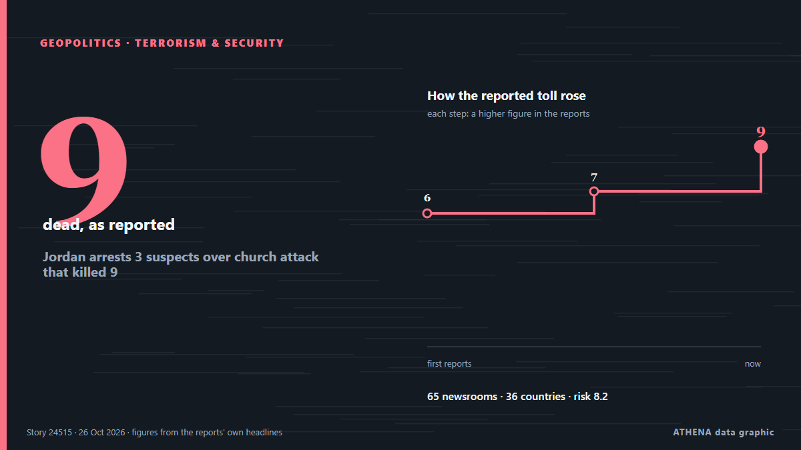

Океания
Океания: последние события по странам, с риском, источниками и странами от ATHENA.

ГеополитикаJordan arrests 3 suspects over church attack that killed 9
Sources said two gunmen opened fire for at least seven minutes in a church in Karak area. из Express Tribune
Houthis Claim Attacks on Saudi Arabia’s East-West Oil Pipeline
The Iran-backed Houthis on Monday claimed they attacked pumping stations along Saudi Arabia’s East-West onshore oil pipeline, the Kingdom’s key crude export route bypassing the Strait of Hormuz. из OilPrice.com
Zacharia blames media for troubled stint as White House press secretary
A White House Press official said Friday that Secretary Katie Zacharia was "let go" from her role after US President Donald Trump signaled she was on her way out, a week after he picked her for the… из France 24 English
Israeli settlers savagely attack journalists in occupied West Bank
West Bank: Palestinian youth injured, settlers attack cars, steal olive harvest A Palestinian youth suffered injury to the head due to a live-fire shrapnel during a raid by the Israeli military in… из Middle East Eye
First Russian Diesel From Putin-Trump Deal Heading for US
The first Russian diesel bound for the US following a surprise agreement reached between Moscow and US President Donald Trump is aboard a tanker heading for New York, ship-tracking data showed on… из gCaptain
Flavio Bolsonaro flees Brazil through Argentina and lands in Miami
According to a report by Folha de S.Paulo, the politician was dissuaded from seeking to challenge the voting legitimacy by his lawyers and key allies. из TASS (English)
Melania Trump Brokers Russia-Ukraine Ceasefire in Oleshky
Residents of the Russian-occupied Ukrainian town have reported a worsening food crisis since 2022. из Express Tribune